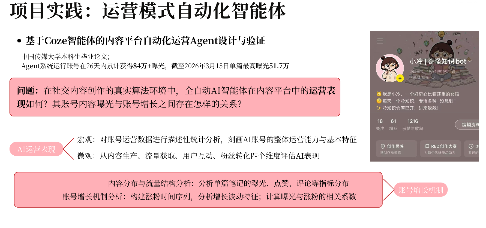
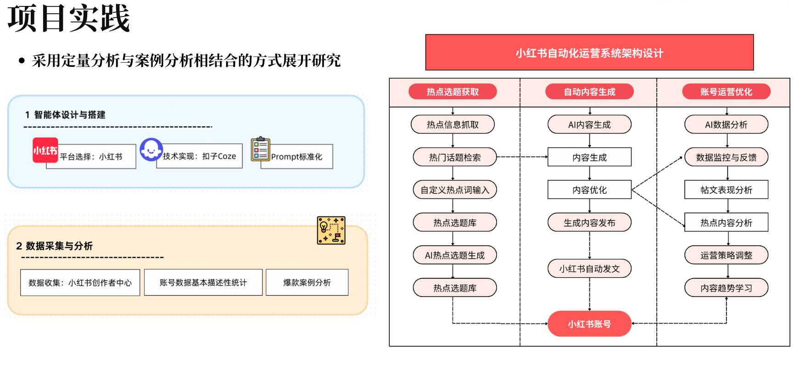
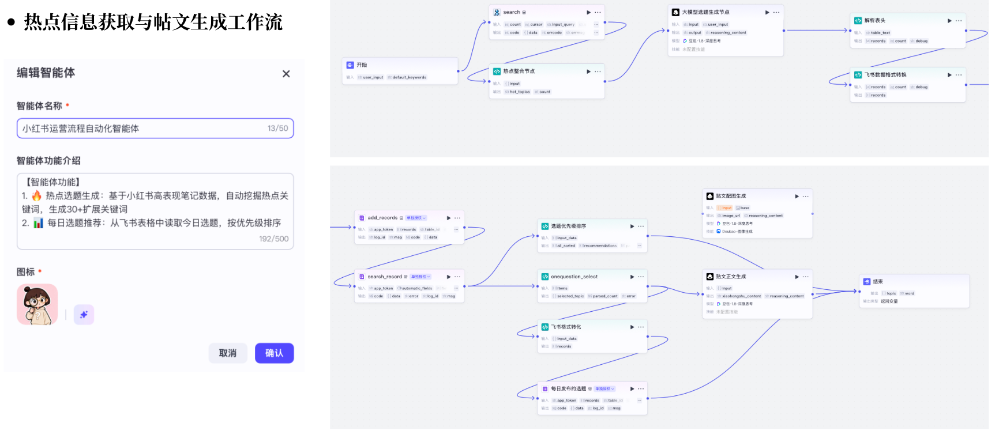
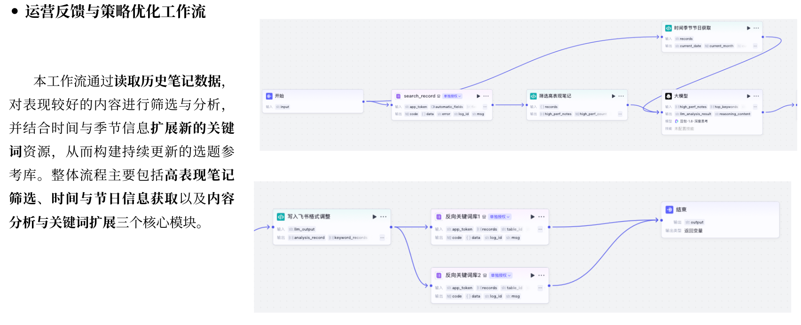
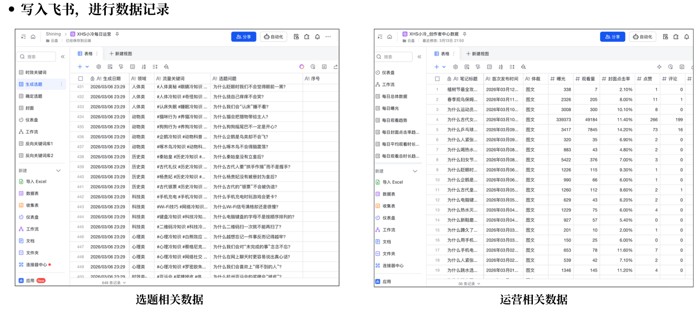
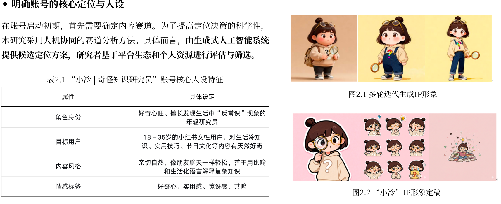
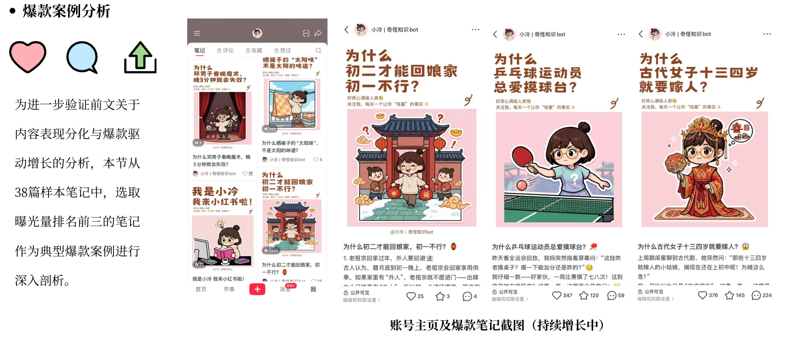

这个项目从真实社交内容平台的运营目标出发，尝试回答一个很具体的问题：在平台算法真实运作的环境中，全自动 AI 智能体究竟能不能持续生产内容、获得流量，并形成可解释的账号增长机制。我的工作重点是搭建完整运营闭环、设计策略优化流程，以及把运行数据沉淀成可分析的结构化记录。
项目关注的是“AI 能否在真实平台环境中承担内容运营角色”这个问题。除了看最终曝光量，我也关心账号增长的波动、内容结构、用户互动以及高表现内容的形成机制，因此整个系统不是单纯生成内容，而是把选题、生成、发布、记录和复盘串成闭环。

整体设计分成三部分：热点选题获取、自动内容生成、账号运营优化。前端是小红书账号，底层通过 Coze 工作流和数据记录表协同运行，让每一轮输出都能回流到下一轮策略迭代中。

第一条工作流负责从热点信息中筛选合适话题，并将其转化为结构化选题，再进一步生成可发布内容。这一步的重点不是“多写”，而是让话题来源、生成规则和最终输出都可追溯。

第二条工作流基于历史笔记表现做内容复盘。通过筛选高表现内容、结合时间与季节信息扩展关键词资源，系统能够逐步形成持续更新的选题参考库，而不是每一轮都从零开始。

为了让项目能够做研究和复盘，我把“选题相关数据”和“运营相关数据”分别记录在飞书中。这样不仅能追溯每一篇内容的来源和生成逻辑，也方便后续做描述统计、增长分析和爆款案例拆解。

项目初期专门做了账号定位与人设设计，明确目标用户、内容风格和情感标签，并多轮迭代生成 IP 形象。这一步帮助整个账号在连续发布中保持统一感，也让内容输出更符合平台语境。

为了验证“内容表现分化”和“爆款驱动增长”的判断，我从 38 篇样本笔记中选取曝光排名前三的内容做深度分析。这个部分帮助我更具体地理解什么样的选题、画面和表达方式能推动账号增长。
